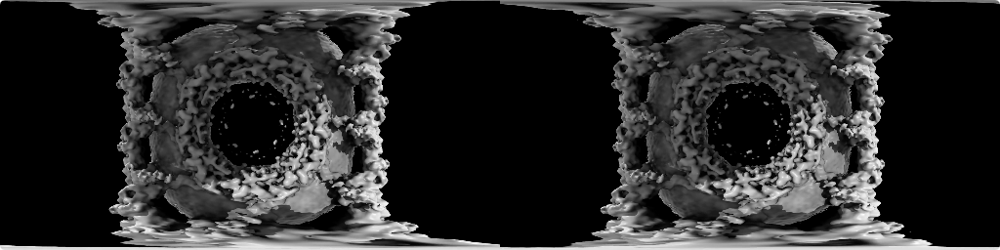

To use an HTC Vive or Oculus Rift virtual reality (VR) system with ChimeraX:
open 3103 from emdb
vr on
Models in ChimeraX should then appear in the VR headset. With the hand controllers (shown as colored cones in the headset):
The physical room bounds are shown as a blue mesh when the headset or a hand controller comes close to a physical wall (within about a meter). Models can be scaled to sizes larger than the physical room.
To turn off rendering in the VR headset and re-enable rendering on the desktop display, use the ChimeraX command:
vr off
The following sections go into more detail:
Motion sickness warning: If the model is stuttering or flickering in the headset (due to insufficient rendering speed), then you should stop viewing it, as this can easily and suddenly induce nausea that could last as long as 24 hours. Even without the stuttering, if you feel any motion sickness, stop using the headset. Progression from slight nausea to needing to throw up can happen quickly.
Small models only. Large molecular structures (more than a few thousand atoms) render too slowly and will cause stuttering in the headset. Large density map surfaces also cause stuttering; a 2003 map at full resolution should work, but larger sizes may require subsampling (step 2). Switching ChimeraX to simple lighting is another way to increase the rendering speed (command light simple). Current headsets render at 90 frames per second in two eyes, so the effective rendering speed needed to avoid flickering is about 200 frames per second. By comparison, a rendering speed of 10 frames per second is adequate on a conventional desktop display.
Desktop display stops rendering. The ChimeraX graphics on your normal computer display will stop updating when the VR mode is turned on. Rendering to the conventional display (generally 60 frames per second) is disabled because it would slow headset rendering. What the VR headset user sees can be shown on the conventional display using the SteamVR menu entry “Mirror Display.”
Side View should be closed. The ChimeraX Side View tool will slow headset rendering and cause stuttering, so it should be closed during VR viewing.
Windows 10 only. We have tested ChimeraX VR on Windows 10 with an Nvidia Geforce GTX 1080 graphics card and with an AMD Radeon RX 480 graphics card. At this time (December 2016), SteamVR is only available on Windows, not Mac OS or Linux.
Difficult to change model display. Changing molecule or map display is inconvenient in that it generally requires removing the headset and using the ChimeraX interface in the conventional display with mouse and keyboard. Alternatively, the desktop can be displayed in the headset using the Vive controller system button; a blue laser pointer will appear and can be used to “click” icons in the ChimeraX Molecule Display and Density Maps toolbars to change the display. A Vive controller side button (the grip button) brings up a virtual keyboard that can be used with the laser pointer to type commands. However, as of November 2016, pressing the return key or backspace key on the virtual keyboard does nothing, so it is not possible to enter ChimeraX commands. This SteamVR bug has been discussed at length online.
Clipping when models far away. If models are scaled to a very large size, parts more than 500 meters away (in physical room dimensions) will be clipped. This may seem like a large distance, but as a model is scaled up it may appear to stop increasing in size because stereoscopic depth perception is not effective beyond about 10 meters. As parts of the model get both larger and farther away at the same rate, the change in size is not evident. To gauge model size, it can be useful to move a hand controller near a physical wall so that the blue mesh will provide a reference distance.
Dynamic scenes may render too slowly. Dynamic (time-varying) scenes are more interesting to view than static scenes. We have successfully displayed 3D optical microscopy time series of crawling cells using the command vseries play with the cacheFrames option so that all surface depictions are precomputed; without that option, the VR headset rendering is too slow. It may also help to change the scene at a slower pace, for example using vseries play with the maxFrameRate option. We have not yet tried showing molecular dynamics trajectories with the coordset command, which lacks a caching option.
ChimeraX can record 360° immersive movies that can be played back on virtual reality headsets. An advantage of movies is that they can be played back even on basic cell-phone VR headsets such as the Samsumg GearVR; a scene that is too complex to render interactively can be recorded over a longer period of time and encoded into a movie file. A drawback of movies is that the viewer cannot move around in the scene – the movie is recorded from one vantage point that may move, but is not under the viewer's control (although the viewer can look in any direction from that vantage point).
To record a 360° movie in ChimeraX, set the camera mode to a 360° format (for example, with command camera 360sbs). For stereoscopic movies, two eye views are recorded and the image frames for the two eyes are placed side by side (360sbs) or left eye on top of right eye (360tb). There is also a monoscopic 360° format (360), although it does not provide direct depth perception when the movie is played back in a headset. The ChimeraX movie record and movie encode commands are used to record the movie frames and assemble them into a single movie file. Other ChimeraX commands can be used to change the viewpoint, display styles, and colors during recording (see making images and making movies).
The following ChimeraX command script (flypore.cxc) loads a density map of the human nuclear pore, sets the camera mode, and records a movie flying through the pore. The data coordinates are in Å, so the commands also use those units. The viewpoint moves 2000 Å (200 nm) towards the pore in increments of 1 Å.
# Open human nuclear pore density map.
open 3103 from emdb
# Set contour level for density map surface
vol #1 level 2.5
# Move 1500 Angstroms closer before starting movie
move z 1500
# Set stereoscopic side-by-side 360 degree camera mode with eye separation to 25 Angstroms
camera 360sbs eyeSeparation 25
# Start capturing movie frames 4800 by 1200 pixels
movie record size 4800,1200
# Move into pore with 2000 steps each 1 Angstrom
move z 1 2000
wait 2000
# Write H.264 encoded movie
movie encode ~/Desktop/flypore.mp4 framerate 90
Movie file (not shown in the ChimeraX browser; copy link to a standard browser to view): flypore.mp4
Movie duration. The movie is 2000 frames at 90 frames per second, for a running time of 22 seconds. It is encoded in H.264 format, and the file size of 27 Mbytes gives a data rate of about 100 Mbytes/minute or 6 Gbytes/hour; however, compression is better than usual because the motion in the movie is very slow. The disk space used by the uncompressed (ppm format) image frames before the movie was encoded was about 33 Gbytes, about 1000x the final size – recording a long movie requires a lot of disk space. Rendering the movie took about 15 minutes, or 30x slower than real time.
Eye separation / physical scale. In recording a stereoscopic (two-eye) movie, it is important to choose an appropriate eye separation in the units of the scene, typically Å. This controls how large and nearby the models will appear in the headset. For the nuclear pore, which is 1000 Å in diameter with a channel diameter of about 500 Å, the script sets the eye separation to 25 Å. Thus, the channel diameter will appear to be 20x (500/25) the actual eye separation. For example, if a viewer's eyes are actually two inches apart, the channel diameter will appear to be 40 inches.
Lighting and shadows. Lighting is problematic in 360° modes. Simple lighting (command light simple) provides one directional light and one fill light, both positioned for viewing along –Z in scene coordinates. When viewed from the opposite direction, models will not have any diffuse or specular lighting highlights, just flat coloring. The same is true of full lighting. With soft lighting (command light soft) ambient lighting from all directions with shadowing is used, but there is no directional light.
Only default model locations. The stereoscopic 360° mode does not work correctly (scene depth is wrong) for models that have been moved within the scene. This is a bug in OpenGL shaders. The mode does work correctly for camera motions (moving the whole scene collectively), as in the above script.
Movie resolution and format. It is desirable to at least match the resolution of the headset. Current headsets have 1200 pixels in the vertical dimension. Recording at a higher resolution can be advantageous because the VR headset distorts the image to correct for lens optics, making some image pixels larger. The width of the side-by-side video should be four times the height. The left- and right-eye images are each an equirectangular projection where longitude angle goes from 0 to 360° along the horizontal axis and latitude angle goes from –90 to 90° along the vertical axis. To make image pixels have equal angular height and width, the movie should have a 4:1 aspect ratio. The ChimeraX graphics window need not have this aspect ratio, as the pixel dimensions can be specified in the movie record command.
Stereoscopic eye positions. The movie includes views from two side-by-side cameras representing a viewer's eyes. In (nonvirtual) reality, eye positions depend on the direction of viewing. Since the movie is recorded without knowing the viewing direction, each vertical strip (meridian) is rendered as if one were looking directly at that strip, with eye-to-eye line perpendicular to view direction. The resulting movie provides good stereoscopic perception when viewed 360° along the equator, although it is strictly only correct at the central vertical strip in the field of view. The north- and south-pole directions (where the meridians meet) will not provide good stereoscopic depth perception.
Movie frame rate. To minimize flickering during fast object motion, it is best to encode the movie for playback at a frame rate matching that of the headset, 90 frames per second with current VR headsets.